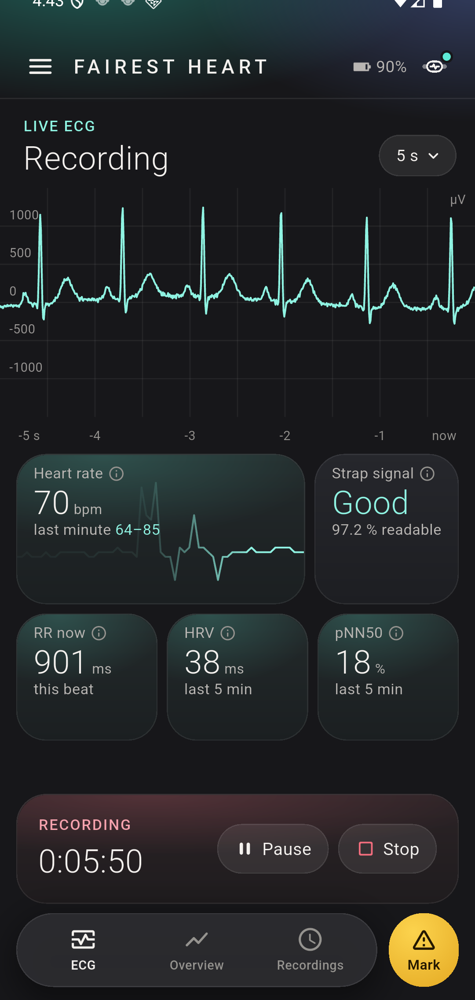

The record of your own heart, in your own hands.
You felt something in your chest, or you were told something about your heart, and you want to know what it was doing right then. Fairest Heart records every day you wear a Polar H10 chest strap, keeps every recording on your phone, and shows you what it recorded. Nothing leaves it unless you share it.
Free to record and share as EDF+. Android 8.0 or newer. The app has no internet access.

You walk in with something to show, not just something to describe.
Weeks later, in an appointment, a description is all you have. A clinic gives you a recorder for a day or a week, then takes it back. Fairest Heart keeps every day you wore the strap.
Live trace, 24/7
Live ECG, heart rate and HRV while the strap is on. Records every day you wear it, phone locked, in six-hour chunks; starts by itself when the strap connects, if you wish.
A mark when you feel it
One tap saves the moment. Add a diary note later: what you felt, when, and how long.
Recording viewer
Any recording on a standard 25 mm/s × 10 mm/mV grid with zoom and pan, the marks lined up, 30 seconds before each.
Your day and night
Heart rate over the day, resting heart rate, HRV, time in training zones, a sleep estimate from the strap, signal quality, a Poincaré plot of your beat-to-beat intervals.
Easy mode: one screen, one button
For someone who only wants to wear the strap: a big "I felt something" button and nothing else to look at. A family member sets it up once and reads the recordings. Switch modes any time in the menu.
Share, in open formats
EDF+ (the open format ECG software and AI tools can read), CSV, or a PDF with strips at your marks and the whole recording on paper.
Three steps, then wear it.
Wet the strap, put it on
Any Polar H10 that streams ECG. The app finds it over Bluetooth and connects.
Recording starts on connect
Lock the phone. Every day you wear it is written to the phone as EDF+ and CSV, with a copy in Downloads.
Look, mark, share
The trace, the numbers, your marks. Share a PDF or the raw file with whoever you choose.
Fairest Heart works with the Polar H10 chest strap. Nothing else is needed.
Any generation that streams ECG. It runs a year on one CR2025 coin cell.
As an Amazon Associate I earn from qualifying purchases.
Free records and shows. Plus shares. Pro holds the long view.
Every plan records and shows the same signal. EDF+ and CSV sharing are always free.
Free
Records- Live ECG, heart rate, strap signal
- All-night recording with marks and diary
- Keeps your newest 24 recorded hours
- Share as EDF+ and CSV
- Baseline and time in training zones
Plus
Shares- Everything in Free
- Keeps seven days
- PDF with strips at your marks and the whole recording
- Live R-R, HRV and pNN50 tiles under the trace
- Depth views: Poincaré and the day's R-R, HRV and pNN50
Pro
Holds the long view- Everything in Plus
- Keeps every recording
- Trend across days
- One-tap backup of new recordings
Prices shown in US dollars; Google Play shows the price for your country. Subscriptions renew until cancelled in Google Play. See the terms.
“I wanted a plain record of my own days and nights that I could hand to whoever I chose. Now you can have one too.”
Fairest Heart was built by its first user after a cardiac event, between medical appointments, with AI assistance. There is no company behind it beyond the one that publishes it, no server, no analytics and no account.